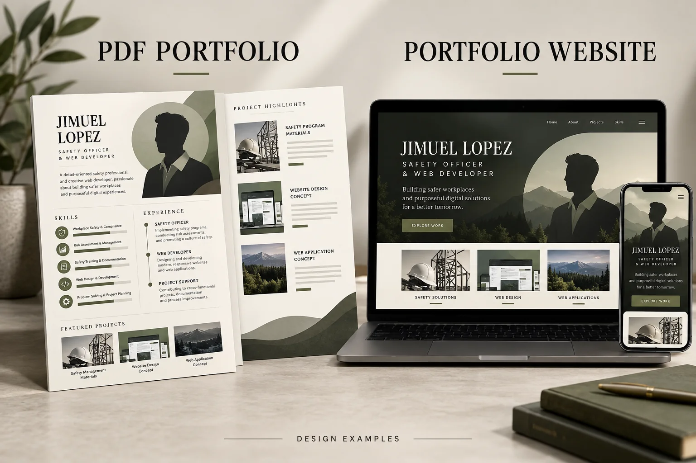

Reading manga
Following illustrated stories, memorable characters, and new chapters.
SAFETY PROFESSIONAL · WEB & APP DEVELOPER
Hi, I’m Jimuel Lopez — a Safety Officer II who also builds websites and applications. I combine hands-on site experience with practical digital skills to support safer workplaces, organized records, and everyday productivity.

01 / PROFESSIONAL PROFILE
I’m Jimuel, a Safety Officer II from Calamba, Laguna, with nearly six years of experience across construction, industrial, electrical, and mechanical work. I enjoy working with people and making safety requirements clear and practical.
My background also includes warehouse operations, data encoding, and quality control. These roles shaped my attention to accurate records, organized workflows, and dependable follow-through.
Alongside site work, I create websites and applications through hands-on, AI-assisted projects. My freelance services include portfolio websites, CV and résumé formatting, PC maintenance, and computer troubleshooting.
Need help with your computer from a distance? I can use TeamViewer or AnyDesk for remote assistance, software setup, and troubleshooting. I’ll listen to the issue, explain the steps in plain language, and work with you at a comfortable pace.
BEYOND WORK
Outside work, I recharge with anime, manga, manhwa, and PC or mobile games. I especially enjoy fighting games, team matches, role-playing adventures, and retro classics.
Following illustrated stories, memorable characters, and new chapters.

Exploring webtoons and ongoing stories in my free time.
Unwinding with imaginative worlds and character-driven stories.
Gaming is one of my favorite ways to relax and connect with friends. I prefer PC gaming, but I also enjoy a few matches on mobile when time allows.
WHAT I BRING TO YOUR TEAM
I bring practical site experience, careful documentation, and a willingness to learn. I take concerns seriously, communicate clearly, and follow through on the work entrusted to me.
On a busy site, I pay attention to changing work conditions and raise concerns with the responsible team. I stay involved until the required follow-up is clear.
I prepare information with the next person in mind: readable reports, consistent entries, and supporting files that are easy to find.
I’m comfortable communicating in Filipino and English. I ask questions when instructions need clarification and keep discussions respectful and easy to follow.
I approach technical requests by understanding the problem first, explaining possible steps, and checking the result with you. Remote support can be arranged through TeamViewer or AnyDesk.
Construction and industrial site experience, supported by BOSH, COSH, and task-specific training.
Attention to records, clear priorities, and practical follow-up with the people involved.
Computer assistance through TeamViewer or AnyDesk, with sessions arranged around your needs and availability.
Friendly explanations you can follow, whether we’re discussing a site task or a technical issue.
02 / CAREER JOURNEY
My background spans site safety, warehouse operations, documentation, and quality control. Each role has shaped how I support people and organize work.
Monitor daily site activities, conduct inspections, and record unsafe conditions. Coordinate toolbox meetings, permit requirements, and PPE checks, then follow up with the responsible team on corrective actions.
Supported roofing and installation work at Monde M.Y. San and the Del Monte Warehouse. Monitored work practices and hazard controls while maintaining clear site safety documentation.
Supported industrial, electrical, mechanical, civil, and construction activities through inspections, safety briefings, and PPE checks. Helped document concerns and coordinate corrective actions.
Supported electrical and mechanical work at Manila Water’s East Bay Raw Water Intake Structure in Pakil, Laguna. Monitored site safety and maintained records to support daily coordination.
Supported architectural and structural work on the Central Link Project in Parañaque City. Monitored housekeeping, PPE use, and adherence to site rules.
Handled material receipt, storage, inventory organization, and issuance at Carmelray Industrial Park 1. Maintained accurate records and helped keep storage areas safe and orderly.
Entered and verified operational records, organized supporting documents, and coordinated information with warehouse and logistics teams.
Supported architectural and structural activities on the Covent Garden Project in Sta. Mesa, Manila. Prepared safety reports and helped follow up on corrective actions.
Handled warehouse materials and maintained inventory entries, encoded records, and organized files for daily operations.
Assisted with facility operations and housekeeping, helping maintain clean, organized work areas.
Assisted with product inspections, recorded findings, and supported established quality-control procedures.
03 / SELECTED PROJECTS
Take a look at my Android, Windows, and web projects, along with creative artwork and examples of my portfolio and document design services.
Safety On The Go
An Android safety project designed to organize inspections, hazard records, and checklists offline, with Demo, Starter, and Premium editions.
Includes inspections, hazard records, checklists, emergency contacts, a reference library, and local profiles. Starter and Premium editions add photos, risk assessments, reports, and backups; Premium expands multi-site and review features.
Purpose: Help organize safety tasks and keep records accessible without an internet connection.
Project status: Android packages and source have been prepared. Testing on physical devices is still needed before relying on the app in daily work.
A compact Windows utility for viewing connection response times, packet loss, and session statistics in one place.
Version 1.3.0 includes target selection, session statistics, status indicators, appearance settings, pause and resume, CSV export, and optional startup with Windows.
Purpose: Make connection measurements easy to follow in a small, customizable desktop panel.
Scope: Uses ICMP ping to check reachability. Some targets block ping, and a successful response does not confirm that a website is working.
Operations overview Prototype
A web prototype for organizing smart-lock installation tasks, inventory, and team coordination.
The offline prototype brings together staff roles, tasks, inventory status, attendance, a calendar, and simulated map markers. It uses local file-based data to demonstrate the workflows.
Purpose: Bring installation and operations information into a single, organized workspace.
Project status: A prototype with simulated location data and a mock backend, intended to demonstrate the concept.
FROM MY DEVIANTART GALLERY
Aqua · Kingdom HeartsI also enjoy creating game-inspired artwork. Visit my DeviantArt gallery to explore designs such as Aqua from Kingdom Hearts and my Lars splash screen for Tekken 7.
View DeviantArt portfolio
05I help turn your experience and selected work into a clear, professional portfolio, CV, or résumé, available as a PDF or website.
PDF portfolio: Present your profile, skills, experience, and selected work in a readable document for sharing or printing.
Portfolio website: Showcase your experience and projects online, with a responsive layout and a way for visitors to contact you.
CV and résumé support: Organize your profile, employment history, training, and skills. I can improve the wording and layout around the information you provide and the role you’re targeting.
Design options: Choose a simple text-focused format for online applications or a visual layout for direct sharing. Relevant portfolio links can be included.
Getting started: Share your current document, updated experience, qualifications, target role, and preferred style. We can discuss the details through the inquiry form.
About the previews: These are illustrative design examples. Your finished document or website will be tailored to your own content.
04 / SKILLS & CAPABILITIES
Skills shaped by practical work, with technical abilities I continue to develop through personal projects and freelance tasks.
I support site inspections, hazard identification and controls, permit-to-work coordination, toolbox meetings, compliance monitoring, and incident reporting.
I build and improve websites and applications through practical projects, using GitHub for version control and exploring Vercel and Supabase workflows.
My projects use HTML, CSS, JavaScript, TypeScript, Next.js, Capacitor, and .NET. My experience varies by technology and continues to grow with each project.
PC setup and maintenance, software troubleshooting, data entry, file organization, and remote assistance using TeamViewer or AnyDesk.
I use Word, Excel, and PowerPoint for documentation, and Photoshop, MS Paint, and PDF tools for visual work and document preparation.
05 / TOOLS I USE
These tools support my reports, creative work, and software projects. I choose them around the task and continue learning through hands-on use.
Tools I use or explore while building, maintaining, and publishing projects.
I organize source code, track revisions, and publish this portfolio with GitHub Pages.
I use deployment previews to review web projects and explore release workflows.
I explore database, authentication, and storage workflows for web applications as part of my ongoing backend learning.
I practice building web interfaces and organizing application pages, including the TechLock prototype.
I preview changes locally and build this portfolio’s files for publication.
I package web-based projects for Android, including Safety On The Go.
I explore web hosting, preview deployments, and publishing projects from Git repositories.
I explore website hosting and domain configuration with Pages and DNS tools.
I explore hosted PostgreSQL databases for storing application and project data.
My everyday toolkit for clear reports, organized records, and shareable documents.
I prepare reports, letters, CVs, and other documents with consistent formatting.
I organize information, maintain spreadsheet logs, and keep records easy to review.
I create readable slides for safety briefings, project discussions, and presentations.
I prepare and review PDFs, convert office documents, and combine or compress files for convenient sharing and printing.
Tools for visual work, writing support, and everyday computer tasks.
I edit images and prepare visual material with attention to clean layouts and readable details.
I make quick image adjustments and simple graphics for everyday documentation.
I use ChatGPT to develop drafts, explore ideas, research topics, and practice coding. I review the output before using it.
I use Claude for writing and coding assistance, checking responses and proposed changes before putting them into practice.
I assist with basic PC setup, software installation, maintenance, and troubleshooting.
One-to-one computer support, with clear explanations as we work through the issue together.
I can use remote desktop access and screen sharing to help with software setup, settings, and computer troubleshooting.
I can help investigate computer issues remotely and guide you through practical fixes during an agreed support session.
Tools that help me build, review, and maintain this portfolio.
I use Node.js to run development tools and prepare project builds.
I use npm to manage packages and run preview, build, and code-checking commands.
The inquiry form uses FormSubmit to deliver messages and meeting requests to my email.
I use Codex to help with code review, debugging, and portfolio updates, then inspect the proposed changes.
Let me know which platform works best for you. We can arrange project discussions, meetings, and updates through a convenient channel.
Chat, share files, and discuss project updates through messages or calls.
Stay in touch through messages, voice or video calls, and document sharing.
Discuss projects through direct messages, voice chat, or screen sharing.
Arrange messages and calls for project coordination and follow-up.
Meet by video to discuss requirements, review designs, and share screens.
Coordinate through team chats, scheduled meetings, and project discussions.
Start a conversation or share quick updates through chat and calls.
Prefer another platform? Include its name and your contact details in the inquiry form, and we can arrange how to connect.
A closer look at the technologies behind this portfolio, with optional code examples.
const [filter, setFilter] = useState("All");type Platform = "Web" | "Android" | "Windows";<div className="flex flex-wrap gap-2"><motion.span layoutId="selected-platform" />gsap.from(card, { opacity: 0, y: 24, duration: 0.6 });anime.animate(card, { translateY: -5, duration: 300 });npm run lintnpx prettier --write srcThese integrations help build the website and check its code. Expand an example if you’d like to see the configuration.
plugins: [tailwindcss()]plugins: { 'react-hooks': reactHooks }...tseslint.configs.recommendedcpSync('assets', 'dist/assets', { recursive: true });My familiarity with each tool varies. I’m continuing to develop my skills through practical work and project reviews.
06 / SAFETY TRAINING
ZBM Safety Training Center
Work at Heights, Scaffolding, Fire Safety, Electrical Safety, and Confined Space.
This training covered working at heights, scaffolding, fire safety, electrical safety, and confined spaces.
It supports my awareness of task-specific hazards and the precautions to check before work begins.
How I apply it: In inspections, toolbox discussions, and checking work precautions. Specialized tasks still require the appropriate permits, competent personnel, and site authorization.
Basic Occupational Safety and Health training.
BOSH provided a foundation for recognizing workplace hazards and supporting organized safety practices.
I draw on this training when discussing risk controls, communicating concerns, and documenting inspection findings.
How I apply it: In routine monitoring, PPE checks, safety briefings, and coordination of corrective actions as a Safety Officer II.
Construction Occupational Safety and Health training.
COSH focused on construction safety, where work activities, site conditions, and hazards can change throughout a project.
It supports my approach to identifying hazards, coordinating precautions, and explaining safety requirements to workers and supervisors.
How I apply it: In construction inspections, toolbox meetings, permit coordination, and follow-up on unsafe conditions.
07 / LET’S CONNECT
Have a safety opportunity, freelance request, or project idea? I’d be happy to discuss how I can help. I’m open to local and overseas opportunities.
LET’S DISCUSS YOUR INQUIRY
Tell me a little about what you need and your preferred meeting date. I’ll reply to discuss the details and confirm availability. Please complete the required fields; optional fields are marked.